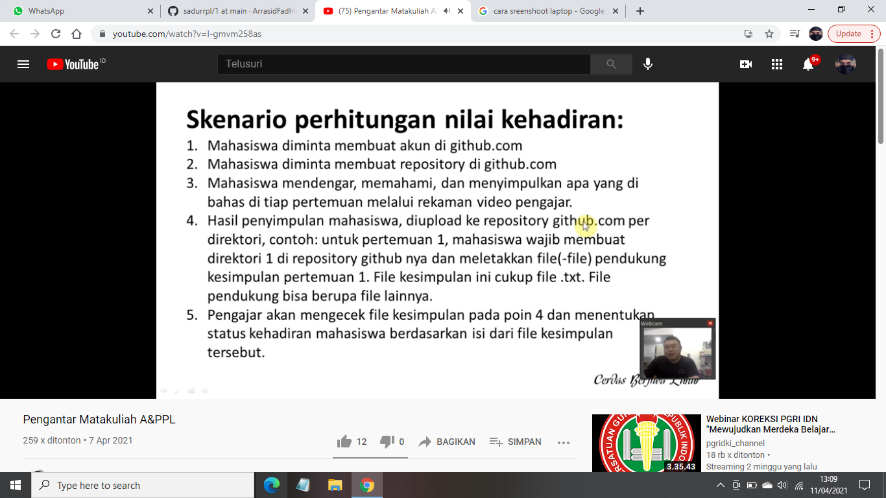

Nim : 1811500094
Nama : Ar'rasid Fadhli
Kelompok : TI6J
Hasil saya menyudur dari penjelasan divideo pada pertemuan ke 4 :
-bapak menjelaskan tentang cara kehadiran
-bapak menjelaskan tentang rencana pembelajaran dalam semester kedepan
-mempelajari tentang usecase diagram
-menggambarkan hubungan atau interaksi apa yang bisa dilakukan open aktor dengan system
-kemudian menjelaskan aktor aktif dan pasif

-membuat usecase diagram
hasil file ASTAH Download